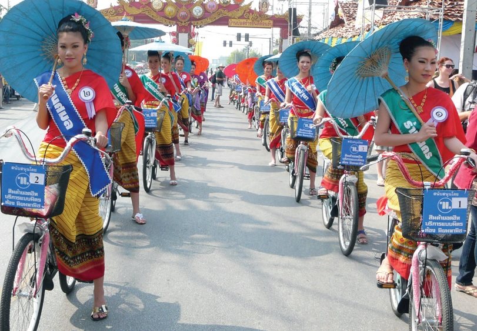
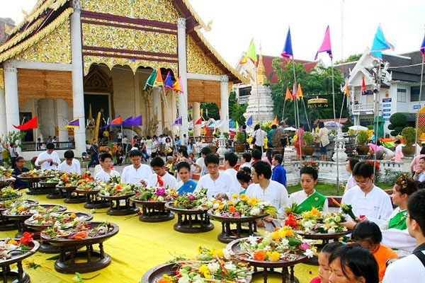
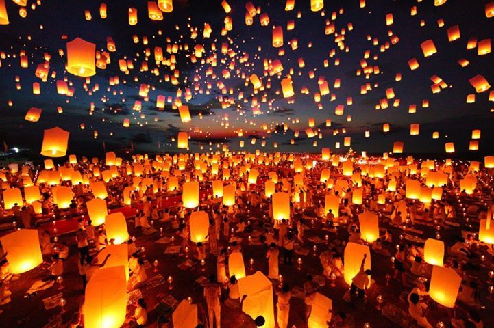
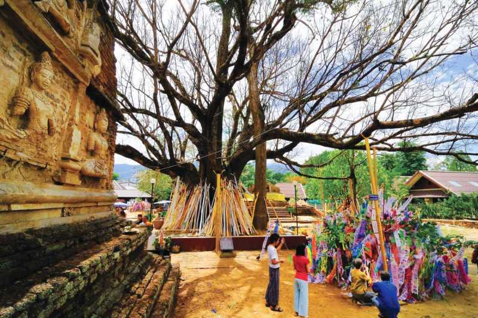
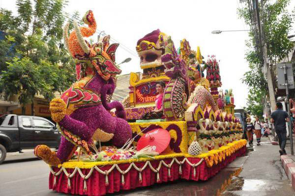

| 🏡 สถานที่ท่องเที่ยว 🏡 | 🏡 อาหารพื้นเมือง 🏡 |
วัฒนธรรมและประเพณีทางภาคเหนือ ภาคเหนือ หรือล้านนา ดินแดนแห่งความหลากหลายทางประเพณีและวัฒนธรรมที่มีความน่าสนใจไม่น้อยไปกว่าภาคอื่นของไทย เพราะเป็นเมืองที่เต็มไปด้วยเสน่ห์มนต์ขลัง ชวนให้น่าขึ้นไปสัมผัสความงดงามเหล่านี้ยิ่งนัก ส่วนบรรดานักท่องเที่ยวที่ไปเยี่ยมชม ต่างก็ประทับใจกับสถานที่ท่องเที่ยวมากมายและน้ำใจอันล้นเหลือของชาวเหนือ ดังนั้น ใครที่ยังไม่มีโอกาสได้ไปเยือนซักครั้งคงต้องไปแล้วล่ะค่ะ ว่าแล้วเราก็ขอนำประวัติเล็ก ๆ น้อย ๆ พร้อมข้อมูลเกี่ยวกับวัฒนธรรมและประเพณีของภาคเหนือมาฝากกัน เผื่อเป็นไกด์ให้เพื่อน ๆ ได้ศึกษาหาข้อมูลก่อนจะเดินทางไปเยือนเมืองเหนือยังไงล่ะ สำหรับภาคเหนือของไทย มีลักษณะภูมิประเทศเป็นเขตภูเขาสลับพื้นที่ราบระหว่างภูเขา ซึ่งผู้คนอาศัยอย่างกระจายตัวแบ่งกันเป็นกลุ่ม อาจเรียกว่า กลุ่มวัฒนธรรมล้านนา โดยจะมีวิถีชีวิตและขนบธรรมเนียมเก่าแก่เป็นของตนเองมีเอกลักษณ์เฉพาะตัว แต่องค์ประกอบที่สำคัญก็ยังมีความคล้ายคลึงกันอยู่มาก อาทิ สำเนียงการพูด การขับร้อง ฟ้อนรำ การดำรงชีวิตแบบเกษตรกร การนับถือสิ่งศักดิ์สิทธิ์และวิญญาณของบรรพบุรุษ ความเลื่อมใสในพระพุทธศาสนาแบบเถรวาทการแสดงออกของความรู้สึกนึกคิดและอารมณ์โดยผ่านภาษาวรรณกรรม ดนตรี และงานฝีมือแม้กระทั่งการจัดงานฉลองสถานที่สำคัญที่มีมาแต่โบราณ เดิมวัฒนธรรมคนเมืองหรือคนล้านนา มีศูนย์กลางอยู่ที่เมืองนพบุรีศรีนครพิงค์เชียงใหม่ ตามชื่อของอาณาจักรที่มีการปกครองแบบนครรัฐที่ตั้งขึ้นในพุทธศตวรรษที่ 18 โดยพญาเม็งราย เนื่องจากภูมิประเทศส่วนใหญ่ของภาคเหนือเป็นภูขาสูงสลับกับแอ่งหุบเขา ทำให้ในฤดูหนาวมีอากาศหนาวจัด ในฤดูร้อนจะมีอุณหภูมิค่อนข้างสูง เพราะอยู่ห่างไกลจากทะเล มีป่าไม้มากจึงถือเป็นแหล่งกำเนิดของแม่น้ำที่สำคัญหลายสาย ได้แก่ แม่น้ำปิง แม่น้ำวัง แม่น้ำยม และแม่น้ำน่าน มีพื้นที่รวมทั้งหมด 93,690.85 ตารางกิโลเมตร และเมื่อเทียบขนาดภาคเหนือจะมีพื้นที่ใกล้เคียงกับประเทศฮังการีมากที่สุด แต่จะมีขนาดเล็กกว่าประเทศเกาหลีใต้เล็กน้อย |
| 1.เทศกาลร่มบ่อสร้าง |
|---|
|  |
ในทุกๆ ปีที่ผ่านมากิจกรรมต่างๆ ที่จัดขึ้นจะมีการแก้ไขปรับปรุงอยู่เสมอๆ แต่ทั้งนี้ก็จะมีกิจกรรมหนักๆ ของงาน คือ การจัดแต่งสถานที่แบบหมู่บ้านล้านนาไทย ซึ่งมีการ จำลองชีวิตความเป็นอยู่ของคนพื้นเมือง เช่น หมู่บ้านชาวเขา มีการสาธิตชีวิตความเป็นอยู่ ตลอดจนการเย็บปักถักร้อย อันเป็นงานฝีมือการแสดงผลิตภัณฑ์ ของชาวเขาเผ่าต่างๆ และการ แสดงของชาวเขาเผ่าต่างๆและการแสดงของชาวเขาในบริเวณลานแสดงของหมู่บ้าน มีการประกวดประดับตกแต่งร้านให้สวยงามเป็นการสร้างบรรยากาศให้มีชีวิตชีวาและเป็นเอกลักษณ์ ของงานให้เด่นชัดขึ้น นอกจากนี้ยังมีการสาธิตศิลปหัตถกรรมพื้นบ้านทางภาคเหนือ เช่น การทอผ้า การทำร่ม เครื่องเงิน เครื่องเขิน ไม้แกะสลัก ฯลฯ และการแสดงพื้นบ้าน ที่สำคัญในงานเทศกาลร่มบ่อสร้างจะมีการจัดมหกรรมร่ม หรือร่มโชว์นานาชาติ โดยได้รับความร่วมมือจากสถานทูตประเทศต่างๆ เป็นอย่างดี ในการส่งร่มของประเทศตน มาแสดง เพื่อให้เห็นความเหมือนและความแตกต่างซึ่งกันและกัน อาทิ ร่มของพม่า บาหลี ฟิลิปปินส์ อินเดีย ญี่ปุ่น ฯลฯ นอกจากนั้นยังจัดให้มีการประกวดและแข่งขันการวาดลวดลายร่มทุก ขนาด ทั้งประเภทวาดรูปแบบดั้งเดิมหรือประเภทออกแบบใหม่ แต่ต้องคงความเป็นเอกลักษณ์ของล้านนาไทยไว้ด้วยนอกจากนี้ยังมีการประกวดสิ่งที่น่าสนใจต่างๆ เป็นต้นว่า การประกวด ผลิตภัณฑ์ที่ทำจาก กระดาษสา ซึ่งเป็นวัสดุในการทำร่ม เช่น ดัดแปลงมาเป็นพัด โคม หรือสินค้าของที่ระลึกได้อีกหลายอย่าง การประกวดตุงหรือธงตะขาบการประกวดโคมลอย ประกวดธิดา บ่อสร้าง และแม่ญิงขี่รถถีบก๋างจ้อง ซึ่งมีส่วนในการเพิ่มบรรยากาศของงาน และยังมีการจัดกาดมั่ว หมายถึง บรรยากาศแบบตลาดพื้นบ้าน ให้ผู้คนเลือกซื้อสินค้าอาหารกันอย่างสะดวก หรือ แม้กระทั่งถ้าต้องการรับประทานอาหารตามประเพณีชาวเหนือ ก็จะมีรายการ ?ขันโตกดินเนอร์? ระหว่างงานอีกด้วย ส่วนการแสดงทางวัฒนธรรมจะบรรจุรายการแสดงพื้นบ้าน ตลอดทั้งกลางวันกลางคืน เช่น บนเวทีใหญ่ก็จะมีการฟ้อนต่างๆ เช่น ฟ้อนเล็บ ฟ้อนเทียน ฟ้อนสาวไหม ฟ้อนไต ฟ้อนม่านมุ้ยเชียงตา และฟ้อนจ้อง ฯลฯ การแสดงการแต่งกาย ชุดล้านนาไทยในอดีตที่หาชมได้ยากยิ่งและมี การแสดงบรรยากาศของขบวนแห่ ?พิธีบวชลูกแก้ว? หรือปอยน้อย และขบวนแห่ ? ปอยหลวง? ซึ่งเป็นประเพณีที่ควรอนุรักษ์ไว้ทั้งสิ้น |
| 2.ประเพณีเข้าอิลทขิล |
|  |
ประเพณีเข้าอินทขิล คือ การทำพิธีสักการบูชาเสาหลักเมืองเสาอินทขิล นอกจากจะเป็นเสาหลักเมือ’แล้ว ยังนับได้ว่าเป็นสิ่งศักดิ์สิทธิ์คู่บ้านคู่เมืองเชียงใหม่ และยังเป็น ที่สักการบูชา ถือว่าเป็นที่รวมของวิญญาณของคนเมืองเหนือและบรรพบุรุษ ชาวเชียงใหม่มีความเชื่อว่า เมื่อสักการบูชาเสาอินทขิลแล้ว บ้านเมืองจะพ้นภัยพิบัติและมีความเจริญรุ่งเรืองขึ้น จึงเป็นประเพณีสักการบูชามาตราบกระทั่งทุกวันนี้ สำหรับกำหนดงานพิธีบูชาเสาอินทขิลนี้ จะมีในช่วงวันที่ 30 พฤษภาคม – 7 มิถุนายน ของทุกปี ในวันประกอบพิธี พวกชาวบ้านชาวเมืองทั้งหนุ่มสาว คนเฒ่าคนแก่ และเด็ก ๆ จะเตรียมดอกไม้ธูปเทียน ขันน้ำขมิ้นส้มป่อย ใส่พานหรือภาชนะใส่ของที่เรียกว่า “สลุง” เอาน้ำขมิ้นส้มป่อยใส่พานหรือสลุงไป “ทำการสระสรง” (สรงน้ำ) สักการบูชา ที่ วัดเจดีย์หลวง ในระหว่างการ “บูชาเสาอินทขิล” ชาวบ้านจะจัดให้มี ซอพื้นเมืองและมีช่างฟ้อนประเภท ฟ้อนหอก ฟ้อนดาบ เพื่อเป็นการสังเวยเทพยดาอารักษ์ “ผีเสื้อบ้าน” และ “ผีเสื้อเมือง”การใส่ขันดอกไม้บูชาเสาอินทขิลนี้มีถึง 28 พานใหญ่ นับว่าเป็นการบูชาพระพุทธเจ้า 28 พระองค์ และยังมีขันดอกไม้บูชาท้าวทั้งสี่ คือ ท้าวจตุโลกบาลอีก 1 ที่ บูชารอบ ๆ เสาอินทขิล 8 แห่ง บูชาพระฤาษี 1 แห่ง บูชาตาปะขาวลั้วะ 1 แห่ง บูชาต้นไม้ยาง 1 แห่ง กุมภัณฑ์ 2 ตน ตนละแห่ง บูชาพระสังกัจจาย 2 แห่ง บูชาพระธาตุเจดีย์หลวง 1 แห่ง เสร็จจากใส่ บาตรดอกไม้และบูชาดังกล่าวแล้ว ก็ไปสรงน้ำพระพุทธรูปฝนแสนห่า เพื่อขอบันดาลให้ฝนตกตลอดฤดู และบูชาพระอัฎฐารสภายในพระวิหาร เพื่อความเป็นสิริมงคลกับตนและครอบครัว |
| 3.ประเพณียี่เป็ง |
|  |
ทุกวันเพ็ญเดือนยี่ (เดือนสอง) ของล้านนา ภาพโคมนับร้อย ๆ ดวงค่อย ๆ ลอยละลิ่วส่องแสงสว่างเจิดจ้าอยู่บนท้องฟ้าเหนือจังหวัดเชียงใหม่ ซึ่งนั่นเป็นสัญลักษณ์ของ "ประเพณียี่เป็ง" หรือประเพณีเดือนยี่ หรือประเพณีลอยกระทงแบบล้านนา ซึ่งประเพณีนี้งดงามจนใครที่อยากไปสัมผัสกับความตระการตาเหล่านี้สักครั้ง ในภาษาคำเมืองของทางเหนือ "ยี่" แปลว่า สอง และคำว่า "เป็ง" หมายถึง เพ็ญ หรือพระจันทร์เต็มดวง ดังนั้น จึงหมายถึง ประเพณีพระจันทร์เต็มดวงในเดือนสอง โดย ในพงศาวดารโยนกและจามเทวี มีบันทึกว่าครั้งหนึ่งได้เกิดอหิวาตกโรคขึ้นในแคว้นหริภุญไชย (หรือหริภุญชัย) ทำให้ชาวเมืองต้องอพยพไปอยู่เมืองหงสาวดี นานถึง 6 ปี จึงจะเดินทาง กลับมายังบ้านเมืองเดิมได้ เมื่อเวลาเวียนมาถึงวันที่จากบ้านจากเมืองไป จึงได้มีการทำกระถางใส่เครื่องสักการบูชา ธูปเทียนลอย ลอยตามน้ำเพื่อให้ไปถึงญาติพี่น้องที่ล่วงลับไป เรียกว่า การลอยโขมด หรือลอยไฟ ประเพณียี่เป็ง จะเริ่มตั้งแต่วันขึ้น 13 ค่ำ ซึ่งถือว่าเป็น "วันดา" หรือวันจ่ายของเตรียมไปทำบุญเลี้ยงพระที่วัด ครั้นถึงวันขึ้น 14 ค่ำ พ่ออุ้ยแม่อุ้ยและผู้มีศรัทธาก็จะพา กันไปถือศีลฟังธรรม และทำบุญเลี้ยงพระที่วัด มีการทำกระทงขนาดใหญ่ตั้งไว้ที่ลานวัด ในกระทงนั้นจะใส่ของกินของใช้ ใครจะเอาของมาร่วมสมทบด้วยก็ได้ เพื่อเป็นทานแก่คนยากจน และในวันขึ้น 15 ค่ำ จึงนำกระทงใหญ่ที่วัดและกระทงเล็ก ๆ ของส่วนตัวไปลอยในลำน้ำ |
| 4.ประเพณีแห่ไม้ค้ำโพธิ์ |
|  |
ประเพณีแห่ไม้ค้ำโพธิ์ จัดขึ้นในเดือนเมษายน ในวันที่ 15 เป็นต้นไป ของทุกปี ที่บริเวณตัวเมืองจอมทอง มีขบวนรถจากชุมชน ห้างร้าน กลุ่มต่างๆ กว่า 40 ขบวน แห่ไปตามเมืองจอมทอง อำเภอจอมทอง จนถึง วัดพระธาตุศรีจอมทองวรวิหาร เป็นประเพณีที่สืบทอดกันมานานกว่า 200 ปี ตามตำนานเกิดขึ้นที่อำเภอเภอจอมทอง ถือเป็นแห่งแรกของ ประเทศไทยและแห่งเดียวในโลก ประเพณีแห่ไม้ค้ำโพธิ์ กลายเป็นต้นแบบของการแห่ไม้ค้ำสะหลีของชาวล้านนา จนได้รับความนิยมไปทั่วภาคเหนือ และเป็นประเพณีที่เริ่มมีชื่อเสียง โด่งดัง และได้รับความนิยมอย่างมาก |
| 5.มหกรรมดอกไม้ประดับ |
|  |
เชียงใหม่ ดินแดนถิ่นไทยงาม ความสดสวยด้วยธรรมชาติ ป่าเขาลําเนาไพร พร้อมดอกไม้นานาพันธุ์ น้ำตก ต้นน้ำลําธารของแม่น้ำสายสําคัญ และ ความงามตามธรรม ชาติ เพื่ออนุรักษ์ความงามตามธรรมชาติอันเป็นเอกลักษณ์ของเมืองเชียงใหม่ ชาวเชียงใหม่จึงได้ร่วมกันปลูกพันธุ์ไม้ตามสถานที่ต่างๆเพื่อสร้างเชียงใหม่ให้เป็น "เมืองดอกไม้บานตลอด ปี" อันเป็นการส่งเสริมการท่องเที่ยวและส่งเสริมอาชีพให้กับเกษตรกรที่สําคัญอีกอย่างหนึ่ง จึงกําหนดให้มีการจัดงาน "มหกรรมไม้ดอกไม้ประดับ" ซึ่งถือเป็นงานประเพณีอันสําคัญอีกงาน หนึ่งของจังหวัดเชียงใหม่ ที่จัดต่อเนื่องสืบทอดเป็นประจําทุกปี งานจะจัดขึ้นในช่วงต้นเดือนกุมภาพันธ์ ณ สวนสาธารณะหนองบวกหาด อำเภอเมือง จังหวัดเชียงใหม่ ในงานจะมีการประกวดนางงามบุปผชาติและขบวนแห่บุปผชาติ นิทรรศการทางการเกษตร การประกวดไม้ดอกไม้ประดับประเภทต่างๆ การประกวดจัดสวน การออกร้านของกลุ่มแม่บ้านเกษตรกร |
|
|
|
|
|